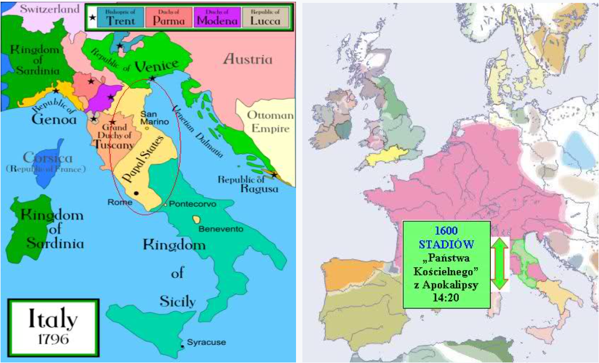

.
Rozdział 14
„I widziałem, a oto Baranek stał na górze Syjon, a z nim sto czterdzieści cztery tysiące tych, którzy mieli wypisane jego imię na czole i imię jego Ojca. (2) I usłyszałem głos z nieba jakby szum wielu wód i jakby łoskot potężnego grzmotu; a głos, który usłyszałem, brzmiał jak dźwięki harfiarzy, grających na swoich harfach. (3) I śpiewali (jakby) nową pieśń przed tronem i przed czterema postaciami i przed starszymi; i nikt się tej pieśni nie mógł nauczyć, jak tylko owe sto czterdzieści cztery tysiące tych, którzy zostali wykupieni z ziemi. (4) Są to ci, którzy się nie skalali z kobietami; są bowiem czyści. Podążają oni za Barankiem, dokądkolwiek idzie. Zostali oni wykupieni spomiędzy ludzi jako pierwociny dla Boga i dla Baranka. (5) I w ustach ich nie znaleziono kłamstwa; są bez skazy. (6) I widziałem innego anioła, lecącego przez środek nieba, który miał ewangelię wieczną, aby ją zwiastować mieszkańcom ziemi i wszystkim narodom, i plemionom, i językom, i ludom, który mówił donośnym głosem: (7) Bójcie się Boga i oddajcie mu chwałę, gdyż nadeszła godzina sądu jego, i oddajcie pokłon temu, który stworzył niebo i ziemię, i morze, i źródła wód. (8) A drugi anioł szedł za nim i mówił: Upadł, upadł wielki Babilon, który napoił wszystkie narody winem szaleńczej rozpusty. (9) A trzeci anioł szedł za nimi, mówiąc donośnym głosem: Jeżeli ktoś odda pokłon zwierzęciu i jego posągowi i przyjmie znamię na swoje czoło lub na swoją rękę, (10) to i on pić będzie samo czyste wino gniewu Bożego z kielicha jego gniewu i będzie męczony w ogniu i w siarce wobec świętych aniołów i wobec Baranka. (11) A dym ich męki unosi się w górę na wieki wieków i nie mają wytchnienia we dnie i w nocy ci, którzy oddają pokłon zwierzęciu i jego posągowi, ani nikt, kto przyjmuje znamię jego imienia. (12) Tu się okaże wytrwanie świętych, którzy przestrzegają przykazań Bożych i wiary Jezusa. (13) I usłyszałem głos z nieba mówiący: Napisz: Błogosławieni są odtąd umarli, którzy w Panu umierają. Zaprawdę, mówi Duch, odpoczną po pracach swoich; uczynki ich bowiem idą za nimi. (14) I widziałem, a oto biały obłok, a na obłoku siedział ktoś podobny do Syna Człowieczego, mający na głowie swojej złotą koronę, a w ręku swym ostry sierp. (15) A inny anioł wyszedł ze świątyni, wołając donośnym głosem na tego, który siedział na obłoku: Zapuść sierp swój i żnij, gdyż nastała pora żniwa i dojrzało żniwo ziemi. (16) I zapuścił Ten, który siedział na obłoku, sierp swój na ziemi, i ziemia została zżęta. (17) I wyszedł inny anioł ze świątyni, która jest w niebie, mając również ostry sierp. (18) I jeszcze inny anioł wyszedł z ołtarza, a ten miał władzę nad ogniem; i zawołał donośnie na tego, który miał ostry sierp, mówiąc: Zapuść swój ostry sierp i obetnij kiście winogron z winorośli ziemi, gdyż dojrzały jej grona. (19) I zapuścił anioł sierp swój na ziemi, i poobcinał grona winne na ziemi, i wrzucił je do wielkiej tłoczni gniewu Bożego. (20) I deptano tłocznię poza miastem, i popłynęła z tłoczni krew, aż dosięgła wędzideł końskich na przestrzeni tysiąca sześciuset stadiów.” (Objawienie 14:1-20).
Przypominam, że w tym rozdziale nadal trwa interwał (przerwa) czasowy (rozdziały od 12 do 15) pomiędzy rozdziałami 11, a 16, potrzebny do opisania wydarzeń, które powstały na przestrzeni wieków średniowiecza, poprzedzających wylanie ostatnich 7 czasz gniewu Bożego, opisanych w 16 rozdziale tej Księgi.
144 tysiące.
W rozdziale 7 Księgi Objawienia mieliśmy przedstawioną wizję zwycięzców - naśladowców Chrystusa żyjących w okresie od I wieku, do 313 roku, którzy wytrwali prześladowania ze strony żydów i pogańskiego Rzymu, czyli wierną „resztkę” z narodu hebrajczyków przedstawioną pod symbolem 144 tysięcy oraz „wielki tłum” ludzi z każdego narodu.
(Szczegółowe wyjaśnienie tożsamości 144 tysięcy znajduje się również w 7 rozdziale tego opracowania).
„Sto czterdzieści cztery tysiące” stoją na Syjonie wraz z „Barankiem”. W ten sposób symbolicznie przedstawiono szczególne wydarzenia, które miały miejsce, gdy Jehoszua Chrystus (Baranek) przyszedł do Żydów („na Syjon” - Izajasza 59:20).
Początek tego 14 rozdziału (wersety 1-5), to przypomnienie wydarzeń, mających miejsce podczas ziemskiej działalności Chrystusa, której efektem było przyjęcia Ewangelii łaski przez hebrajczyków, jako pierwszych. Uznanie Go za Syna Bożego, za ich Pana – Baranka, który swoją krwią przypieczętował Nowe Przymierze.
Proroctwo Izajasza stwierdza, że również nawróceni z pogan, którzy uznają „Izraelskiego” Boga (Jedynego Boga - Ojca), nazywać będą Żydów „Syjonem Świętego Izraelskiego” (Izajasza 60:14, por. Izajasza 2:1-4) i podobnie jak w rozdziale 7 Księgi Objawienia, tak i tutaj, po przedstawieniu wierzących pochodzenia żydowskiego (144 tys.), znów jest mowa o zwiastowaniu Ewangelii „całemu światu”, a więc narodom pogańskim.
„Góra Syjon” (14:1).
Tekst ten jest jak już wspomniałem, symbolicznym ujęciem rzeczywistych postaci i wydarzeń, osadzonych w konkretnym, historycznym czasie. Rozróżniamy w nim:
- „Baranka”, który wyobraża Chrystusa (Jana 1:29, 1 Koryntian 5:7).
- „Górę Syjon”, która wyobraża naród izraelski (Izajasza 51:16; 59:20, Izajasza 49:14-16).
Symboliczny „Syjon” znany jest także (bo został przeniesiony z proroctw Starego Testamentu) w księgach nowotestamentowych i zawsze odnosi się do cielesnego Izraela (Rzymian 9:31-33, 1 Piotra 2:6-8, Izajasza 28:16).
W czasach Starego Przymierza synonimiczne określenia: „Syjon”, „Miasto święte” i „Jeruzalem”, odnosiły się do Izraela, i tak, gdy w proroctwie Izajasza 52:1-2 napisano:
„Obudź się, obudź się, oblecz się w swoją siłę, Syjonie!... (2) Strząśnij z siebie proch, powstań branko jeruzalemska, zdejmij z twojej szyi okowy, wzięta do niewoli córko syjońska!”, to jest oczywiste, że Bóg nie kieruje Swego wezwania do literalnej góry Syjon, na której był zbudowany królewski pałac Dawida, ani nie przemawia do kamiennych murów Jerozolimy, lecz zwraca się do Swojego ludu – przemawia do dzieci Izraela.
Podobnie u Izajasza 49:14, to jest oczywiste, że tekst nawiązuje na skargę Izraelitów i na pocieszenie, jakie kieruje do nich Bóg.
Tak jest w wielu wersetach (Psalm 9:15, 147:12, Izajasza 10:12, 28:16, 40:2, 46:13, 51:17, 59:20, 62:1, 11, Jeremiasza 4:14, 6:8, Mateusza 21:5, Jana 12:15).
„Syjon” staje się rodzicielką wielkiej liczby „dzieci”, głównie dzięki wielkiemu zadaniu ewangelizacyjnemu, jakie Bóg powierzył Swej wiernej „reszcie”.
Zaskoczony oglądanymi scenami prorok Izajasz pisze:
„Czy ziemia może być zrodzona w jednym dniu, czy naród może się urodzić za jednym razem? A jednak Syjon, zaledwie poczuł bóle, od razu porodził swoje dzieci.” (Izajasza 66:7-8 ).
Stanie na górze Syjon dotyczy wszystkich chrześcijan, którzy przyznają się do Chrystusa i o których czytamy w Hebrajczyków 12:22-24.
Zgodnie z tym, co wcześniej przepowiedziano:
„Wszakże każdy, kto będzie wzywał imienia Pana, będzie wybawiony; gdyż na górze Syjon i w Jeruzalemie będzie wybawienie” (Joela 3:5).
„Mówi: To za mało, że jesteś mi sługą, aby podźwignąć plemiona Jakuba i przywrócić oszczędzonych synów Izraela, więc ustanowiłem cię światłością pogan, aby moje zbawienie sięgało aż do krańców ziemi.” (Izajasza 49:6).
„Jego imię na czole i imię jego Ojca” (14:1).
W Objawieniu 7:2-4 z kolei czytamy, że została na nich wyciśnięta „pieczęć Boga Żywego”. „Pieczęcią” jest oczywiście duch Święty (Efezjan 1:13, 4:30; 2 Koryntian 1:22), jest to znak własności Bożej. Ci, którzy ją otrzymują są synami Bożymi (Rzymian 8:14-17, 1 Jana 3:1, Jana 1:12).
W następnej kolejności, zostali zapieczętowani wierni „z każdego pokolenia i narodu...” (Objawienie 7:9).
Kto nie jest zapieczętowany, nie należy do Boga: „kto Ducha Chrystusowego nie ma - ten nie jest jego” (Rzymian 8:9).
„I śpiewają jakby pieśń nową” (14:3 BT).
Werset 3 w przekładzie BG oraz BT (za wyjątkiem mało precyzyjnego w tym przypadku przekładu BW) mówi o „jakby nowej pieśni”.
Chodzi o to, że zbawienie w Jehoszua Chrystusie nie było - a przynajmniej nie powinno być dla Żydów rzeczą zupełnie nową, nieznaną. Wszak mieli oni proroctwa pouczające o Mesjaszu i Jego dziele zbawienia (Izajasza 53), a Jego Osoba i Ofiara były doskonale zobrazowane w systemie ofiarniczym świątyni izraelskiej (Hebrajczyków 9:1-28, 10:1-17).
Poza tym całe Pismo świadczy właśnie o Nim:„Badacie Pisma, bo sądzicie, że macie w nich żywot wieczny; a one składają świadectwo o mnie” (Jana 5:39).
Pewnie właśnie, dlatego nawróceni z Żydów „śpiewali jakby nową pieśń”, gdyż znali Oni „pieśń Mojżesza” (starą pieśń), a teraz, przyjmując zbawienie w krwi Chrystusa stwierdzili, że jest on między innymi objawiony w ceremoniach „Zakonu” i przepowiedziany głosami proroków. Zrozumieli, więc nową, rzeczywistą formę zbawienia.
„nikt się tej pieśni nie mógł nauczyć, jak tylko owe sto czterdzieści cztery tysiące” (14:3).
Dlaczego tej „pieśni” nie mógł się nauczyć nikt spoza grupy „stu czterdziestu czterech tysięcy”?
Przyjście Mesjasza do Izraela („do Syjonu” - Izajasza 59:20), głęboko poruszyło środowisko żydowskie. Jehoszua stał się dla nich „kamieniem obrazy i opoką zgorszenia” (Mateusza 21:42, Dzieje 4:11-12, 1 Piotra 2:3-8), o który wielu Izraelitów potknęło się, a on ich zmiażdżył (Mateusza 21:44).
Wielu z nich zlękło się o swoją pozycję, prestiż i bogactwo „Grzesznicy w Syjonie zlękli się, drżenie ogarnęło niegodziwych.” (Izajasza 33:14).
Odrzucili Go, chociaż mogli na własne oczy obserwować, że został posłany przez Boga. Zbawca głosił im łaskę i odpuszczenie grzechów, ale oni woleli nadal oczyszczać się i usprawiedliwiać poprzez przepisy zakonne, odrzucając wiarę w Niego.
W konsekwencji z Jego Ofiary skorzystała tylko „Reszta” Izraela (Rzymian 9:27-33, 11:1-5).
I w tym momencie powinno być jasne, dlaczego miliony Żydów „nie mogło się nauczyć” tej, „jakoby nowej pieśni”. Nie mogli się jej nauczyć, gdyż nie przyjęli wiarą Chrystusa, jako Syna Bożego, ich Zbawiciela posłanego przez Boga, zatwardzili swoje serca, odrzucili Go, jako Mesjasza, a poprzez swój upór sprzeciwili się działaniu ducha Świętego (Mateusza 12:22-32).
„Nową pieśń” znały tylko chrześcijańskie pierwociny Żydów (Resztka Izraela) w odróżnieniu od pozostałych, bez wiary w Jehoszua. Późniejsi chrześcijanie, (Żydzi i reszta narodów), o których akurat nie wspomniała w tym fragmencie Księga Objawienia, również znają tą pieśń, gdyż Słowo Boże temu nie przeczy, a wręcz przeciwnie zachęca, aby wszystkie narody śpiewały „pieśń nową”:
„Śpiewajcie Panu pieśń nową, Śpiewaj Panu, cała ziemio!” (Psalm 96:1, por. 98:1, Psalm 149:1, 144:9, Izajasza 42:10).
Poza tym w samej Księdze Objawienia 5:8, „nową pieśń” śpiewają także „Zwierzęta” (aniołowie) i „Starcy” (święci ST), choć fragment z 14:3 podaje, że nikt prócz 144 tysięcy nie mógł się jej nauczyć. Widać, więc wyraźnie, że to „nikt” oznacza ludzi bez wiary.
Podobna sytuacja jest we fragmencie Apokalipsy 7:3, gdzie tylko o 144 tysiącach jest mowa, że są opieczętowani, natomiast przemilcza się to, kiedy mowa o „wielkim tłumie” (7:9). Jednakże już rozdział 9, werset 4 ukazuje, że tylko ludzie źli nie mają pieczęci Boga. Ponownie widać, więc, że ci z Objawienia 7:9 (wielki tłum) muszą być opieczętowani, analogicznie jak osoby z Objawienia 7:3 (144 tysiące). Zresztą jest to oczywiste, gdyż, „kto nie ma Ducha Chrystusowego, ten nie jest jego.” (Rzymian 8:9).
„Zostali wykupieni z ziemi.” (14:3).
W tekście greckim Objawienia 14:3 autor na oznaczenie słowa „wykupieni” użył greckiego zwrotu „egorasmenoj”. Ten sam wyraz występuje Objawieniu 5:9, w odniesieniu do każdego wierzącego:
„I zaśpiewali nową pieśń tej treści: Godzien jesteś wziąć księgę i zdjąć jej pieczęcie, ponieważ zostałeś zabity i odkupiłeś („egorasmenoj”), dla Boga krwią swoją ludzi z każdego plemienia i języka, i ludu, i narodu, (10) i uczyniłeś z nich dla Boga naszego ród królewski i kapłanów, i będą królować na ziemi.”
Podobnie w liście Piotra:
„Lecz byli też fałszywi prorocy między ludem, jak i wśród was będą fałszywi nauczyciele, którzy wprowadzać będą zgubne nauki i zapierać się Pana, który ich odkupił („egorasmenoj”) sprowadzając na się rychłą zgubę.” (2 Piotra 2:1).
Z wersów tych wyraźnie wynika, iż autor Objawienia stosował słowo „wykupić” wobec 144 000 osób nie w znaczeniu: „przenieść do innego miejsca”.
Słowo „wykupić” jest przez Piotra oraz Jana używane w znaczeniu ściśle związanym ze złożeniem, przez Jehoszua ofiary zbawczej za grzechy świata każdego wierzącego, a nie tylko 144 tysięcy.
„wiedząc, że nie rzeczami znikomymi, srebrem albo złotem, zostaliście wykupieni z marnego postępowania waszego, przez ojców wam przekazanego, (19) lecz drogą krwią Chrystusa, jako baranka niewinnego i nieskalanego.” (1 Piotra 1:18-19).
Jednakże trzeba zaznaczyć, że wszyscy, którzy zostali „wykupieni” (Objawienie 5:9, 1 Piotra 1:17-20), zostali równocześnie „wykupieni z ziemi” w takim sensie, że gdy w dniu powtórnego przyjścia Pana Jehoszua Chrystusa zostaną zabrani do „Domu Ojca” (Jana 14:2-3). A już dziś, mimo, że żyją jeszcze na tej Ziemi, nie należą do niej, mimo że wciąż jeszcze na niej przebywają (Jana 15:19, 17:14-21).
„Zostali oni wykupieni spomiędzy ludzi, jako pierwociny dla Boga i dla Baranka.” (14:4).
Trzeba tutaj zaznaczyć, że symboliczne 144 tysiące są wykupieni spośród ludzi, a nie spośród wiernych.
To nie jacyś wybrańcy z wybranych, lecz pierwszy plon „Ciała Chrystusa” – pierwociny z narodu Izraelskiego:
„Izrael był poświęcony Panu, był pierwocinami jego plonów, wszyscy, którzy go kąsali, ściągali na siebie winę, nieszczęście na nich spadało, mówi Pan.” (Jeremiasza 2:3).
„Ze swej woli zrodził nas przez słowo prawdy, byśmy byli jakby pierwocinami Jego stworzeń.” (Jakuba 1:18 BT).
Niektóre kościoły i organizacje uzurpują dla swoich „świętych” miejsce w tej liczbie 144 000, przez co starają się uwiarygodnić wśród swoich wyznawców swoje nauki i udokumentować swoją wyłączność dla głoszenia Ewangelii.
Słowa „pierwociny” w Biblii zawsze oznaczają coś, co jest pierwsze, od czego coś się zaczyna (porównaj „pierwociny” i „pierworodny” w 3 Mojżesza 23:10, Przysłów 3:9, Mateusza 1:25 BG, 5 Mojżesza 18:4-5).
Apostoł Jakub, pisząc swój List do nawróconych z „dwunastu pokoleń, które żyją w rozproszeniu” (Jakuba 1:1), stwierdził, że wierzący w Chrystusa Żydzi, są „pierwiastkami stworzenia Jego” (Jakuba 1:17-18 BG), „pierwszym zarodkiem jego stworzeń” (BW), „pierwocinami Jego stworzeń” (BT).
„Są to ci, którzy się nie skalali z kobietami; są bowiem czyści” (14:4).
W symbolice biblijnej „kobieta” oznacza religię, kościół, kult, lud Boży lub diabelski – odstępczy, z tym, że Zbór Boży wyobrażony jest przez „kobietę czystą” – „dziewicę”, „pannę”:
„Zabiegam bowiem o was z gorliwością Bożą; albowiem zaręczyłem was z jednym mężem, aby stawić przed Chrystusem dziewicę czystą” (2 Koryntian 11:2, porównaj Efezjan 5:21-23, Izajasza 54:5-6, Jeremiasza 6:2, Objawienie 12:1), zaś kult czy kościół odstępczy przez „kobietę wszeteczną”, „nierządnicę”:
„W czasach króla Jozjasza rzekł Pan do mnie: Czy widziałeś, co uczyniła odstępna żona, Izrael?” (Jeremiasza 3:6-10, porównaj Ozeasza 2:1-13, Ezechiela 16, Objawienie 17).
Ci, którzy tworzą zastęp „stu czterdziestu czterech tysięcy”, nie mieli nigdy nic wspólnego z „kobietami”, z którymi mogliby się skalać - a więc z obcymi religiami.
Na ten fakt zwrócił uwagę Paweł mówiąc: „My jesteśmy Żydami z urodzenia, a nie grzesznikami z pogan” (Galacjan 2:15).
Ich czystość jest absolutna – „bo są dziewicami”, w absolutnym tego słowa znaczeniu, podkreśla tekst biblijny!
Oni nie są tymi (poganie), którym przebaczono utratę dziewictwa - ich dziewictwo pozostało nienaruszone! Warunek ten spełniają jedynie nawróceni z Żydów. Będąc członkami Wybranego Narodu w Starym Przymierzu, byli czystym ludem Bożym, na przykład, kiedy czytamy Objawienie 12:1, widzimy obraz niewiasty, czyli „brzemiennego” proroctwami Izraela w przededniu narodzenia Jehoszua Chrystusa, a gdy przyjęli Go, stali się członkami Jego „Ciała” (Jana 2:19-21, Efezjan 2:20-22).
Poganie, gdy odwracają się od bałwochwalstwa, do Boga Jedynego i Jego Syna, to również zostają oczyszczeni w krwi Jehoszua. Wszystkie popełnione grzechy - jeśli tylko zostaną wyznane - zostają przez Boga odpuszczone. Jednak o takim człowieku nie można już powiedzieć, że nie skalał się z inną religią. Nie jest on już dziewicą w absolutnym tego słowa znaczeniu, jakkolwiek Bóg nie robi żadnej różnicy pomiędzy nawróconym poganinem, a Żydem „nie uczynił żadnej różnicy między nami a nimi, oczyściwszy przez wiarę ich serca.” (Dzieje 7:9), o czym również świadczy choćby wcześniej zacytowany tekst z 2 Koryntian 11:2, gdzie apostoł Paweł nazywa „dziewicą czystą” w duchowym zamyśle tego słowa, cały zbór Koryncki, czyli zarówno Żydów, jak i pogan.
„jedno ciało i jeden Duch, jak też powołani jesteście do jednej nadziei” (Efezjan 4:4).
„Podążają oni za Barankiem, dokądkolwiek idzie” (14:4).
Podążania za Barankiem nie można tutaj rozumieć jako chodzenia za Nim, czy to po miejscach Jego ziemskich wędrówek w Palestynie, bądź, jak uczą niektórzy, podróżowania z Nim po bezmiarach Wszechświata.
Biblia i sam Jehoszua mówią co innego o naśladowaniu Go. Jest to:
- codzienne sprawiedliwe życie (Mateusza 19:28),
- picie „kielicha” Jehoszua i gotowość do cierpień (Marka 10:38-39, 1 Piotra 4:12-18),
- zachowanie wiary i postawy Jehoszua wobec wszelkich życiowych prób i doświadczeń (1 Piotra 2:21-23, Dzieje 7:59-60).
„I w ustach ich nie znaleziono kłamstwa; są bez skazy.” (14:5).
Odnośnie „Reszty” cielesnego Izraela proroctwo mówiło:
„Resztka Izraela nie będzie się dopuszczała bezprawia, nie będzie mówiła kłamstwa i w ich ustach nie znajdzie się język zdradliwy.” (Sofoniasza 3:13).
Nic dziwnego, gdyż wzorem postępowania dla nich był Syn Boży - Jehoszua Chrystus, w którego ustach „nie znalazła się zdrada” (Izajasza 53:9 BG).
Takie świadectwo wydał Pan Jehoszua Natanaelowi, który stał się jednym z Dwunastu Apostołów (Jana 1:47) i takie samo świadectwo, Słowo Boże wydaje całemu zastępowi „stu czterdziestu czterech tysięcy” (Objawienie 14:5).
Pochlebna opinia odnośnie „stu czterdziestu czterech tysięcy”, wskazuje, że w ich sercu i w ustach nie znalazł się podstęp ani zdrada względem sprawy Bożej. Mimo własnej słabości i licznych przeciwieństw, jakie ich spotkały, stali wiernie przy Chrystusie. Oni jaskrawo kontrastowali z pełnymi fałszu i obłudy faryzeuszami (Mateusza 26:4, Dzieje 7:51-54). Byli szczerzy i prostolinijni (Jana 1:48-49, 6:67-69). Nawet wtedy, gdy któryś z nich osłabł, załamał się i upadł - gdy zrozumiał swój błąd, gorzko płakał, i odwracał się od zła (Łukasza 22:61-62).
O jednym jednak nie wolno zapominać - byli oni ludźmi, a jako tacy popełniali też czyny niestosowne i przeżywali chwile słabości. Świadectwo apostoła Pawła, który w Liście do Rzymian cytuje Psalmistów (Rzymian 3:9-10, por. Psalm 14:1-3, 53:2-4), jest dowodem, że doskonale sprawiedliwego człowieka (poza Jehoszua) nie było i nie ma. Nie wolno, więc odczłowieczać tej grupy wierzących – to tacy sami ludzie, jak my, którzyśmy uwierzyli w Syna Bożego i uczynili Chrystusa naszym Panem, jedyną Drogą do Boga Ojca.
Jaki jest cel wspomnienia w tym miejscu Apokalipsy o 144 tysiącach z narodu Izraela.
Zapewne celem przypomnienia w tym miejscu Księgi Objawienia o 144 tysiącach, jest przypomnienie dzieciom Bożym, czytelnikom, że monoteistyczny depozyt wiary pochodzi ze Starotestamentowego Izraela:
„Słuchajże Izraelu: Pan, Bóg nasz, Pan jeden jest” (5 Mojżesza 6:4 BG).
Ma to ich utwierdzić, uspokoić i uzmysłowić dzieciom Bożym, że nic w tej kwestii się nie zmieniło, przypomnieć, że „w ustach ich (czyli, 144 tys. wierzących w Jednego Boga i Jednego Pana) nie znaleziono kłamstwa” i że to odstępczy kościół (rzymsko-katolicki) próbuje ich zwieść - kłamie, nakłaniając do bałwochwalstwa, głosząc trzech bogów (trójca, trójjedyny), zwodzi ich oraz siłą nakłania do przyjęcia tej wiary, jako znamienia, co jasno powiedziano w 9 wersecie (także bałwochwalstwa w postaci kłaniania się drewnianym klocom, jak krzyż, posągi i obrazy, itp.), o czym informują nas kolejne wersety, czyli 9-13. Wersety te zawierają przestrogę, a w 12 wersecie mamy jasne i czytelne ostrzeżenie:
„Tu się okaże wytrwanie świętych, którzy przestrzegają przykazań Bożych i wiary Jezusa.”
Przykazania mówią o Jednym Bogu (również Chrystusa), ostrzegają przed bałwochwalstwem (również w postaci czynienia krzyży, posągów i obrazów), natomiast połączenie tych przykazań oraz wiarę Chrystusa znajdujemy tutaj:
„A Jezus mu odpowiedział: Najpierwsze ze wszystkich przykazanie jest: Słuchaj, Izraelu! Pan, Bóg nasz, Pan jeden jest.” (Marka 12:29 BG).
Poza tym pierwsi naśladowcy Syna Bożego (apostołowie i niemal cały pierwotny zbór, a więc także 144 tysiące) podzielili los Jehoszua. Byli prześladowani przez swych współziomków (Dzieje 4:1-13, 18-21, 5:26-41, 7:59-60, 8:1-3) i Rzym pogański.
Przypomnienie o pierwszych naśladowcach Chrystusa, ma zapewne również na celu, zachęcić i pocieszyć cierpiące, prześladowane wierne dzieci Boga, które na przestrzeni wieków, podobnie jak pierwsi uczniowie Pana zawsze byli w mniejszości, w przeciwieństwie do dominującego fałszywego kościoła rzymskokatolickiego i podobnie, jak wówczas w I wieku, tylko niewielu z pośród milionów żydów uwierzyło, tak i teraz. Dlatego też, to, że jest ich niewielu nie oznacza, że większość, która ich prześladuje (podobnie, jak miało to miejsce w pierwszych wiekach) ma rację, gdyż „wąską drogą”, poprzez „ciasną bramę” zawsze podąża tylko mała garstka (Łukasza 12:32).
W 13 wersecie tego rozdziału znajdujemy pocieszenie dla tych wszystkich, którzy musieli przejść przez okrutne prześladowania podczas ciemnych wieków średniowiecza.
„I usłyszałem głos z nieba mówiący: Napisz: Błogosławieni są odtąd umarli, którzy w Panu umierają. Zaprawdę, mówi Duch, odpoczną po pracach swoich; uczynki ich bowiem idą za nimi.” (Objawienie 14:9-13).
„I widziałem innego anioła, lecącego przez środek nieba, który miał ewangelię wieczną, aby ją zwiastować mieszkańcom ziemi i wszystkim narodom, i plemionom, i językom, i ludom, który mówił donośnym głosem: (7) Bójcie się Boga i oddajcie mu chwałę, gdyż nadeszła godzina sądu jego, i oddajcie pokłon temu, który stworzył niebo i ziemię, i morze, i źródła wód.” (Objawienie 14:6-7).
W powyższych wersetach w symboliczny sposób przedstawiono niezwykle ważne poselstwo, skierowane do mieszkańców całej Ziemi. Poselstwo to jest zwiastowane narodom pogańskim od dni apostolskich, dokładnie od chwili skierowania Ewangelii do pogan (Dzieje 10:1-48, 11:1-18, por. 14:8-18).
Od nawróconej „Reszty” Izraela, rozpoczęło się budowanie Zboru Chrystusowego. Jehoszua głosił Ewangelię najpierw Żydom (Mateusza 10:4-5, Dzieje 1:8), a Ewangelia przyniosła zbawienie „Żydowi najprzód, potem i Greczynowi” (Rzymian 1:16 BG).
U proroka Izajasza w rozdziale 42, wersetach od 1 do 4 zapowiedziano, że gdy przyjdzie Mesjasz, „sąd narodom wyda” (BG), „ludom ogłosi prawo”.
Następnie dowiadujemy się, że „Ojciec nikogo nie sądzi, lecz wszelki sąd przekazał Synowi” (Jana 5:22).
Podczas zwiastowania Ewangelii Jehoszua najpierw oświadcza, że „nie przyszedł, aby sądzić świat, lecz aby świat zbawić” (Jana 3:17, 12:47), a potem wyjaśnia, że w czasie Łaski Ojciec nikogo nie sądzi (Jana 5:22), i że nie czyni tego także On sam (Jan 12:47). Natomiast ludzie sądzą się sami na podstawie swojego stosunku do Ewangelii:
- ci, którzy przyjmują Ewangelię, „przechodzą ze śmierci do życia” (Jana 5:24),
- ci, którzy ją odrzucają, skazują się na śmierć (Jana 12:48).
Jak odbywa się ten sąd, Jehoszua opisał w innej Swej wypowiedzi:
„Kto wierzy w niego, nie będzie sądzony; kto zaś nie wierzy, już jest osądzony dlatego, że nie uwierzył w imię jednorodzonego Syna Bożego. (19) A na tym polega sąd, że światłość przyszła na świat, lecz ludzie bardziej umiłowali ciemność, bo ich uczynki były złe.” (Jana 3:18-20).
I właśnie, dlatego „anioł” niosący Ewangelię Zbawienia, równocześnie ogłasza nastanie „godziny sądu Bożego”, która cały czas trwa!
„Sto czterdzieści cztery tysiące” to ci, którzy jako pierwsi w wyniku „Sądu Ewangelii” zostali uznani za godnych Wieczności. Od nich - i przez nich – „Sąd Ewangelii” został ogłoszony całemu światu, wszystkim narodom pogańskim. Obyśmy i my, podobnie jak oni, osądzili się do życia wiecznego.
„Zaprawdę, zaprawdę, powiadam wam, kto słucha słowa mego i wierzy temu, który mnie posłał, ma żywot wieczny i nie stanie przed sądem, lecz przeszedł ze śmierci do żywota.” (Jana 5:24).
„A drugi anioł szedł za nim i mówił: Upadł, upadł wielki Babilon, który napoił wszystkie narody winem szaleńczej rozpusty.” (14:8).
Jest to zapowiedź wydarzeń przyszłych, wyrażona w czasie przeszłym, gdyż i tak każde słowo Boga urzeczywistnia się z niesamowitą precyzją „tak jest z moim słowem, które wychodzi z moich ust: Nie wraca do mnie puste, lecz wykonuje moją wolę i spełnia pomyślnie to, z czym je wysłałem.” (Izajasza 55:11).
Jest to zapowiedź tego, co nastąpi za „chwilę”, czyli końca teokracji papiestwa – końca okresu 1260 lat, który upłynął w 1793 roku.
Potwierdzenie tego znajdujemy w Starym Testamencie, kiedy prorok Izajasz dopiero ZAPOWIADAŁ upadek starożytnego Babilonu, a użył czasu przeszłego – dokonanego:
„I oto tu nadchodzi oddział jeźdźców, zaprzęgi konne. I odezwał się głos: Upadł, upadł Babilon i wszystkie posągi jego bogów potrzaskane na ziemi. (10) O, ludu ty mój, wymłócony i podeptany na klepisku! Co usłyszałem od Pana Zastępów, Boga izraelskiego, to wam zwiastowałem.” (Izajasza 21:9-10).
(Objawienie 14:14-19).
Syn człowieczy, to określenie jest stosowane w Biblii do Chrystusa, który jest Królem (korona na głowie) wykonującym wolę (władzę i sąd) Boga Ojca (Mateusza 8:20, 9:6, 10:23, 11:19, 12:8,32,40, 13:37, Daniela 7:13, Objawienie 1:13).
W tym wypadku winogrona oznaczają dojrzały do osądzenia grzech i ludzi. Jest to aluzja do końca 1260 lat dominacji i rządów bestii - zainicjowanych przez wybuch Rewolucji Francuskiej.
Podobne wypowiedzi znajdujemy w Starym Testamencie:
„Albowiem tak mówi Pan Zastępów, Bóg Izraela: Córka babilońska jest jak klepisko w czasie, gdy się je ubija; już wkrótce, a przyjdzie dla niej czas żniwa.” (Jeremiasza 51:33).
Podobne wyrażenia znajdujemy skierowane do odstępczego Izraela:
„W domu Izraela widziałem okropne rzeczy: Tam Efraim oddał się wszeteczeństwu, Izrael się splugawił. (11) Także dla ciebie, Judo, przygotowane jest żniwo.” (Ozeasza 6:10-11).
(Zobacz Amosa 8:1-2, Izajasza 17:4-5, (Abdiasza 1:4-6).).
Wyciskanie soku z winogron jest obrazem realizowania się gniewu Bożego (Izajasza 63:2-4).
Ogień to również symbol towarzyszy sądowi Bożemu (Judy 4:7).
„I deptano tłocznię poza miastem, i popłynęła z tłoczni krew, aż dosięgła wędzideł końskich na przestrzeni tysiąca sześciuset stadiów.” (14:20).
Kolejna niezwykle precyzyjna wskazówka, mówiąca nam, kogo dotkną plagi Boga, opisane w 16 rozdziale Księgi Objawienia.
„Stadion” to około 200 metrów (długości wahają się pomiędzy 174 – 210 metrów).
W tekście chodzi zatem o odległość około 320 km - mniej więcej taka też odległość dzieliła najdalej wysunięty punkt północnego Państwa Kościelnego (Patrimonium Sancti Petri) od południowego punktu leżącego pod Rzymem – państwo znajdowało się na terenie obecnych środkowych Włoch i istniało w okresie od 756 do 1870 roku (zajęcie Rzymu po zjednoczeniu Italii), było rządzone przez papieży, jako świeckich monarchów. Pozostałością jest Watykan.

kopia strony: https://jehoszua.ddv.pl/readarticle.php?article_id=49 Wszelkie prawa autorskie należą się autorowi tej strony
z854d4681a3z